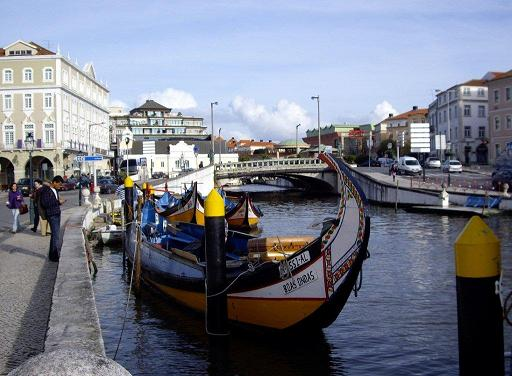
Aveiro: les moliceiros
Aveiro doit son surnom de "Venise portugaise" aux canaux qui la sillonnent. Ce fut un port de mer, jusqu'à ce qu'une violente tempête barre le rivage d'une levée de sable de 45 km percée d'un étroit goulet, la passe de Barra. Cela s'est passé il y a 400 ans.
Ainsi fut créée une zone lagunaire soumise à la marée et quadrillée peu à peu de chenaux. Aveiro retrouva la prospérité en développant la collecte d'algues, l'industrie de la céramique et l'exploitation des marais salants. Avec 75.000 habitants, c'est aujourd'hui le 3ème centre industriel du Portugal, après Lisbonne et Porto.
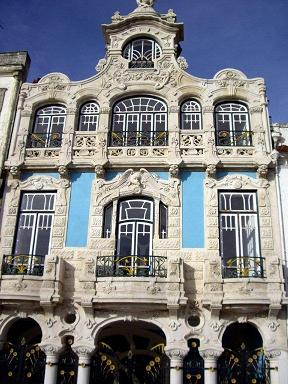
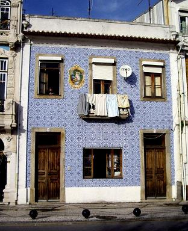
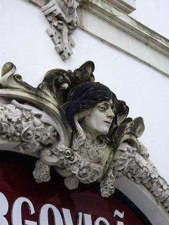
Aveiro: Façades style 1900
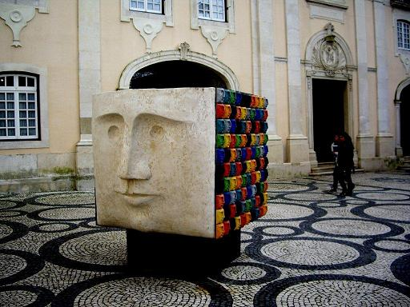
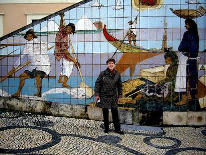
L'art contemporain orne les rues d'Aveiro
Le site le plus intéressant, selon le guide, est l'Ancien Couvent de Jésus qui accueillit des religieuses jusqu'en 1834, date à laquelle les congrégations portugaises furent dissoutes. C'est aujourd'hui un musée. Le peu de temps dont nous disposons ne nous permet qu'une déambulation dans les rues d'Aveiro. Nous y découvrons d'intéressantes façades "art nouveau" et de belles réalisations contemporaines. Aveiro, ancien foyer d'art baroque et possédant une école de sculpture réputée, renoue ainsi avec son passé.
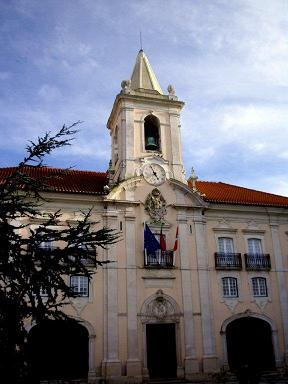

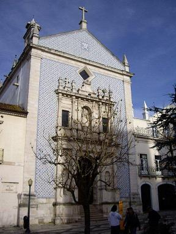
Sur la même place: l'Hôtel de ville et la Cathédrale Saint Dominique (XVème siècle) baroquisée.
Près de cette place se trouve aussi une pâtisserie où l'on peut acheter des spécialités locales.
Nous avons goûté à un flan, à base de jaune d'œuf, au nom imprononçable...
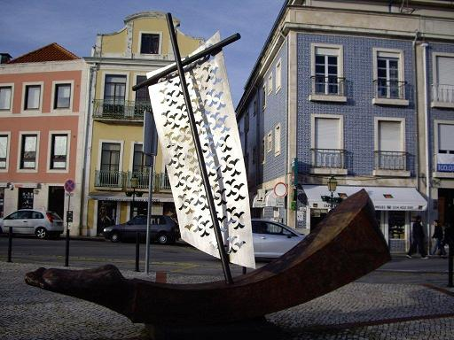
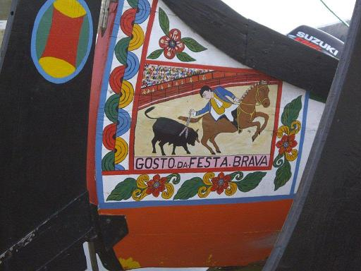
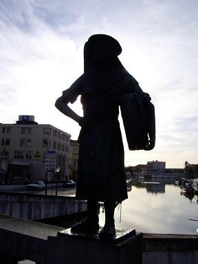
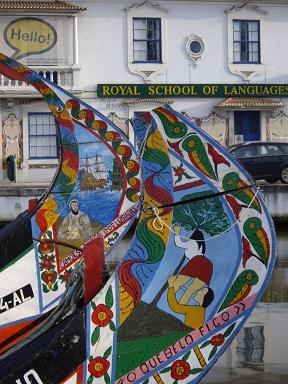
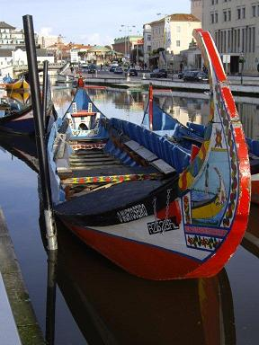
Moliceiros en effigie et au naturel. Une maraîchine d'autrefois.
Suivant les recommandations du guide, nous admirons les décors naïfs des embarcations à quai, régulièrement remis au (bon ou mauvais) goût du jour.
Pombal
Nous poursuivons notre route jusqu'à Pombal, à mi-chemin entre Porto et Lisbonne, où nous sommes hébergés pour la durée du séjour. Nous prenons les repas du soir dans un excellent restaurant, le Vintage, de l'autre côté de la place. L'hôtel fait face à une église en restauration, donc fermée. Une inscription au-dessus du portail assure qu'elle contient une image miraculeuse de la Vierge.
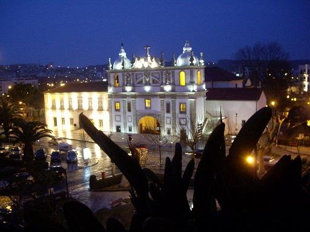
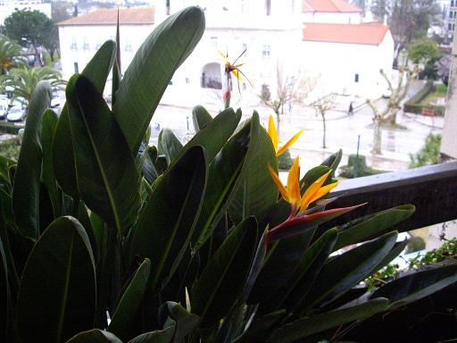
Pombal: l'église baroque et la strelitzia de notre balcon

Leiria
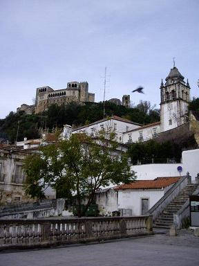
Leiria: le château et sa loggia renaissance
Le 2ème jour de notre séjour est consacré à 3 sites proches de Pombal: Leiria, Fátima et Tomar.
Le rôle historique majeur que tint Leiria au XIVème siècle - le roi Dinis Ier et la reine, Sainte Isabel, y établirent leur résidence principale, est attesté par le château construit par Afonso Henriques qui avait chassé les Maures de ces lieux. L'austère bâtisse fut dotée d'une loggia Renaissance, d'un chœur gothique et d'arcades manuélines.
À côté du château on aperçoit les vestiges d'une chapelle gothique, Notre Dame de Pena.
La ville possède plusieurs maisons aux façades carrelées et un stade où se disputèrent récemment (2004?) certains matches de la coupe du monde de football.
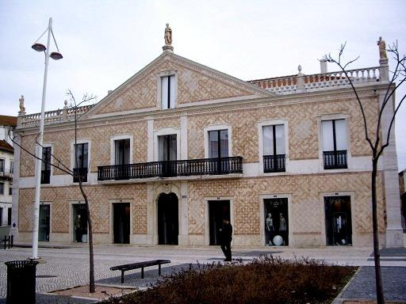
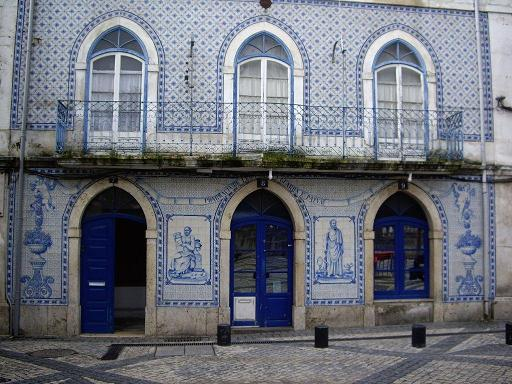
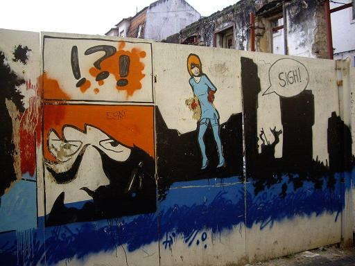
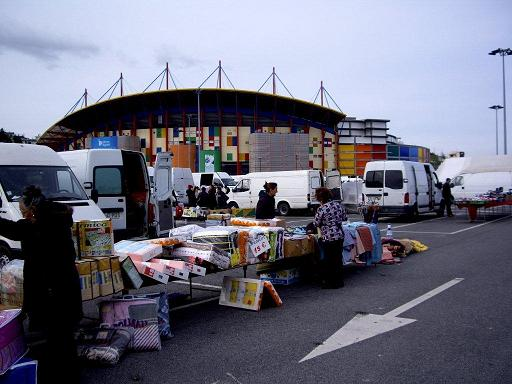
Aspects de Leiria: architecture moderne et ancienne
Fátima
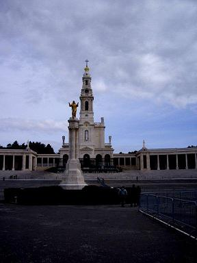
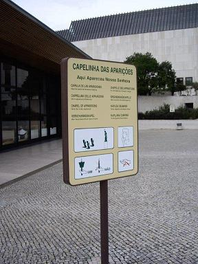
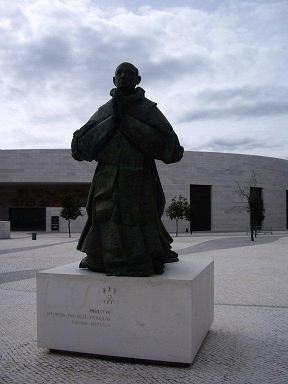
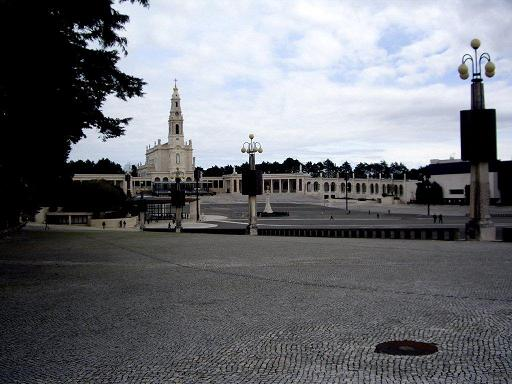
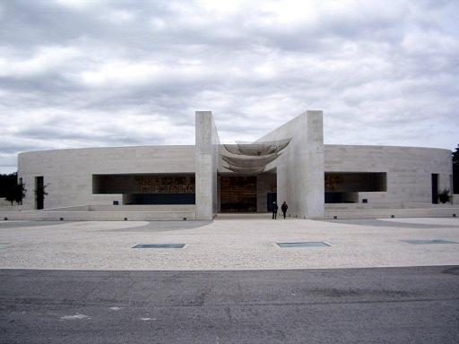
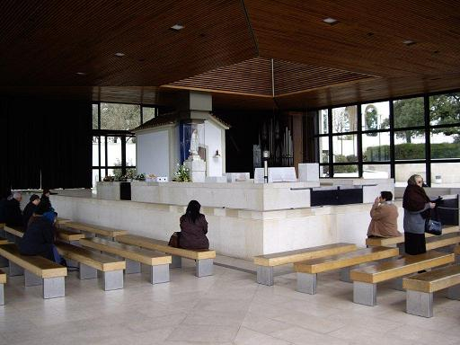
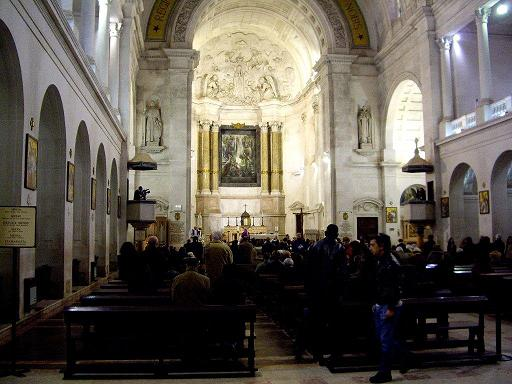
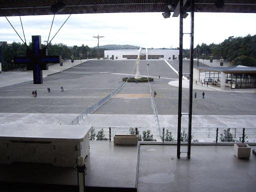
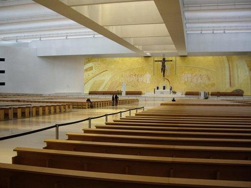
Fátima: l'esplanade, les 2 basiliques, la chapelle des apparitions.
Fátima attire chaque année quelque 4 millions de pèlerins. Même si l'on n'est pas croyant, on ne peut qu'être fasciné par l'immensité du site: la basilique néoclassique, consacrée en 1953, peut accueillir 300.000 personnes sur l'énorme esplanade. Le Pape Jean-Paul II a contribué à la renommée du site par trois visites et la canonisation en 2000 de deux des trois enfants auxquels la Vierge serait apparue en 1917. De ce fait la construction d'une deuxième basilique de même envergure s'est révélée nécessaire.
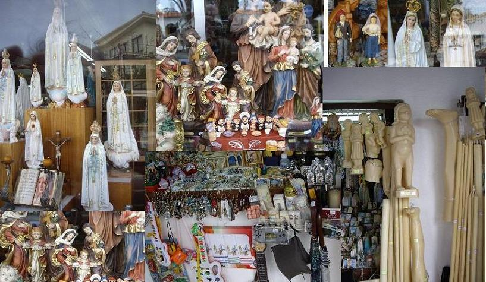
Fátima: les devantures